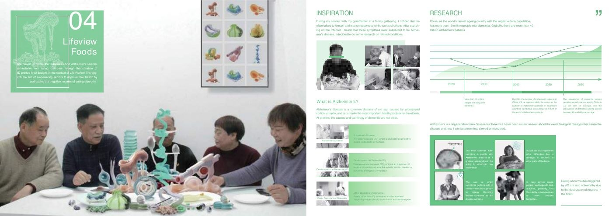
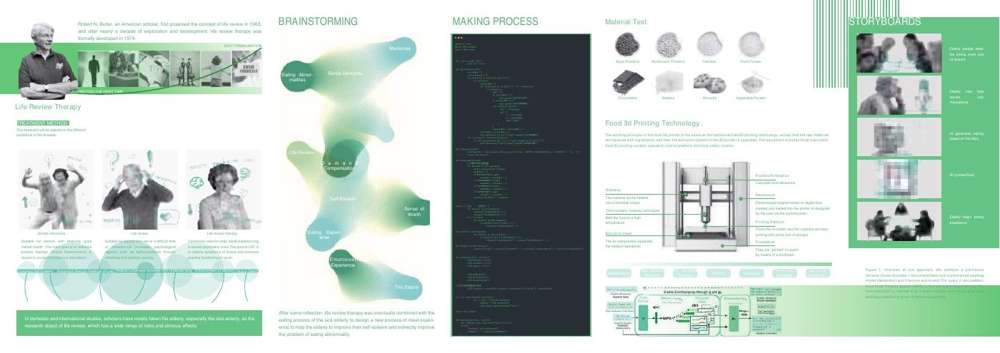

Speculative service · Care and food design
Lifeview Foods
Imagine a meal shaped by a person’s memories.
A speculative dining service combining reminiscence, personal storytelling, and experimental food forms to explore dignity and identity in later life.
AI-generated food and care benefits are proposed scenarios. The project does not establish a working clinical service or demonstrate improvements in dementia, nutrition, or self-esteem.

Design around personal identity
The concept asks how a meal might acknowledge a person’s history and sense of contribution. It explores a service in which storytelling becomes a creative input to the dining experience.
Separate making from speculation
The portfolio documents food-form experiments, material tests, storyboards, and a proposed AI-assisted service flow. The artifacts show design exploration; the imagined AI-to-food service and its care outcomes remain unvalidated.

